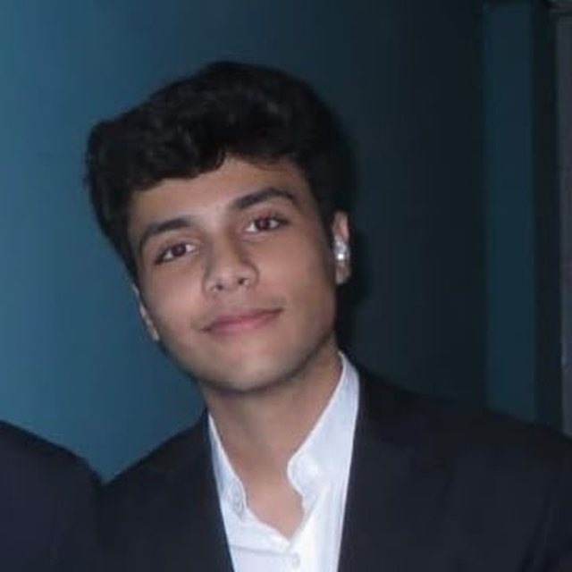

September 2026 · Case competition
Sankriya 11.0
Club Kaizen, IBS Hyderabad · Final round
Built the risk classification and the scoring, sized the annual loss from a revenue base the brief never gave, and costed the programme
Pendingresult pending

Certamus · Core team
IIM Sirmaur · Classification, sizing, cost
“Leadership is a responsibility, not a position.”
3 case competitions with Conyso, 2 reaching the final.
I am the one who wants the number pinned down. On a case that usually means taking the pile of things that went wrong and turning it into something countable: four buckets, a scale printed on the slide, and a rule that one incident can sit in more than one bucket but its cost is only counted once.
Then the sizing, which is the part people skip. A brief that gives no financials still has to be costed, so you build the base in the open, show the arithmetic step by step, and say plainly that the finding is the ranking rather than the rupees. On the fund I owned the structural rule and the regime switch, and presented the results, including the three things about them that did not flatter us.
Outside this I play basketball, at district and zonal level, and I volunteer teaching basic maths at the Dakshta Foundation and helping at an animal rescue. I am disciplined but not fixed. I would rather be shown a better framing than defend the one I arrived with.
September 2026 · Case competition
Club Kaizen, IBS Hyderabad · Final round
Built the risk classification and the scoring, sized the annual loss from a revenue base the brief never gave, and costed the programme
September 2026 · Case competition
Findmenon, NMIMS · Final round
Owned the structural rule and the regime switch, and presented the results, including the three things about them that do not flatter us
September 2026 · Case competition
CHRIST (Deemed to be University), Delhi NCR · did not contest it